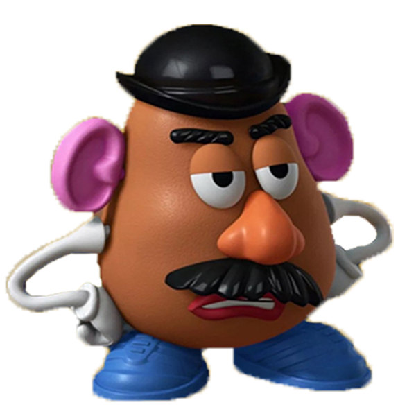

ROL
El señor cara de papa, es un personaje
secundario de las peliculas de toy story
con la participacion en 4 de ellas.
Aunque es Malhumorado se lleva bien
con Buzz y Woody sus amigos los cuales
los llevan a el y a sus amigos a unas grandes aventuras
APARIENCIA
Un muñeno Mr.potato que se puede
puede unir consta de una nariz naranja, cejas y bigotes
negros, brazos delgados y flexibles color blanco
ojos con parpados, labios, rojos, orejas rosadas
bombin negro y zapatillas azules
PERSONALIDAD
A pesar de que es sarcastico, cinico , grosero
(principalmente con Woody al principio)
y tiene un punto de vista mordaz, tiene un buen
corazon en el fonod, ama a su esposa, la Sra.Cara de Papa
hacer todo lo posible para salvar a sus amigos